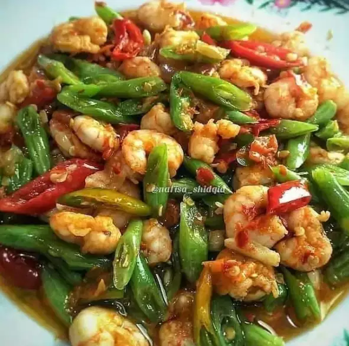

1.Tumis Buncis Udang

Bahan:
- 100 gr udang loreng, kupas dan bersihkan
- 100 gr baby buncis, iris serong
- Garam
- Gula
- Penyedap rasa
- 1 buah cabai merah besar, iris serong
- 1 buah cabai hijau besar, iris serong
Bumbu Halus:
- Cabai rawit
- Cabai keriting sesuai selera
- 2 siung bawang putih
- 4 butir bawang merah
Cara Membuat:
- Tumis bumbu halus, beri air sedikit dan masak sampai harum.
- Masukkan buncis dan irisan cabai hijau, lalu tambahkan gula, garam, dan penyedap, aduk rata.
- Terakhir masukkan udang, masak sampai udang berubah warna dan matang. Angkat dan sajikan.